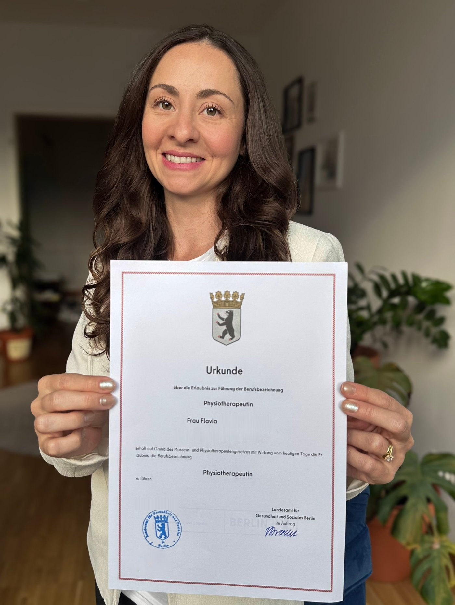

Sou fisioterapeuta brasileira, vivo na Alemanha e passei por todo esse processo. Ajudo você a reconhecer seu diploma e iniciar sua carreira aqui — sem perder tempo com burocracia desnecessária e com tudo explicado em português.
1:1
Atendimento individual
3
Pacotes disponíveis
69€
Sessão estratégica para começar
PT
Tudo em português
Passei pelo processo de reconhecimento profissional na Alemanha. Sei quais documentos pedem, onde a burocracia trava e o que ninguém te conta antes de começar. Falo por experiência própria, não por suposição.
O processo tem etapas definidas — mas é fácil se perder sem um guia. Você recebe um checklist personalizado para o seu perfil, com os documentos certos, na ordem certa, sem voltas desnecessárias.
Não é uma lista de tarefas que você recebe e some. Estou disponível para dúvidas durante todo o processo — uma pessoa real, que conhece a realidade brasileira e a alemã, do seu lado.

Sou fisioterapeuta, brasileira, e hoje vivo e trabalho na Alemanha. Mas até chegar aqui, passei por um caminho que eu queria que alguém tivesse me explicado antes.
Os documentos, os prazos, as respostas diferentes dependendo de quem eu perguntava. Muitas vezes eu me senti perdida, e cheguei a pensar em desistir.
Hoje eu sei como esse processo funciona, e é por isso que criei esta consultoria: para que você não precise descobrir tudo sozinho, como eu descobri. Eu não faço o reconhecimento por você, porque quem decide é o órgão alemão. Mas eu te mostro o caminho, te ajudo a organizar cada etapa e fico do seu lado, do começo ao fim.
Se você sonha em trabalhar como fisioterapeuta na Alemanha, vem conversar comigo.
Sessão Estratégica
Ideal para quem está começando a pesquisar
99€69€ / sessão única
Valor abatido se você contratar um dos pacotes depois.
Acompanhamento do Reconhecimento
Do início à aprovação do diploma
700€490€ / processo completo
Preço fixo, sem surpresas.
Pacote Completo
Para quem quer chegar preparado em tudo
1.200€890€ / pacote
Meu diploma é válido na Alemanha?
Diplomas brasileiros não têm reconhecimento automático. É necessário passar por um processo de Anerkennung (reconhecimento profissional) junto ao órgão competente do estado onde você vai trabalhar. Esse processo é o foco da consultoria.
Quanto tempo leva o processo?
Em média, de 6 a 12 meses — dependendo do estado, da completude dos documentos e de eventuais complementações exigidas. Com orientação adequada, você evita atrasos evitáveis e sabe o que esperar em cada fase.
Preciso falar alemão para começar?
Para o processo de reconhecimento, normalmente exige-se comprovação de nível B2 de alemão. Mas você pode começar a organizar documentos e entender o processo antes disso. A consultoria é toda em português.
Como funciona a primeira sessão?
É a Sessão Estratégica, por videochamada: avaliamos seu caso, explico o processo e respondo suas dúvidas. Você sai com um mapa personalizado dos próximos passos, mesmo que não contrate um pacote depois. Se contratar, o valor da sessão é abatido.
Atende outras profissões da área da saúde?
O foco da consultoria é a fisioterapia, que é a área em que tenho experiência. Mas se você atua em outra profissão da saúde, me manda uma mensagem e pergunta. Vou ver se consigo te ajudar.
Agende sua Sessão Estratégica por videochamada. Você entende o que o processo exige e sai com um mapa personalizado dos próximos passos.
Ficou alguma pergunta? Me manda uma mensagem. Vale também se você atua em outra profissão da área da saúde.
Primeira sessão: 69€